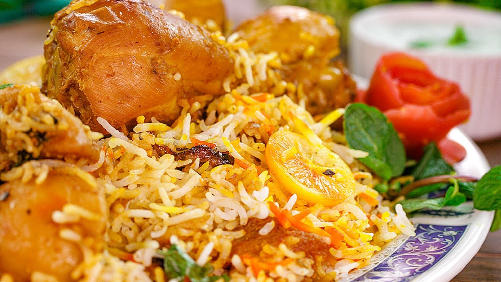

Biryani

A south asian delicacy !
Biryani is a mixed rice dish originating among the Muslims of the Indian
subcontinent. It is made with Indian spices, rice, either with meat, or
eggs or vegetables such as potatoes. Biryani is one of the most popular
dishes in South Asia, as well as among the diaspora from the region.
Ingredients
- Oil
- Onions
- Bone-in, cut up, skinless chicken
- Whole spices
- Garlic + Ginger
- Tomatoes
- Yogurt
- Rice
- Dried Plums
Steps
- Prepare the chicken curry
- Parboil the rice
- Bring it all together for a final steam